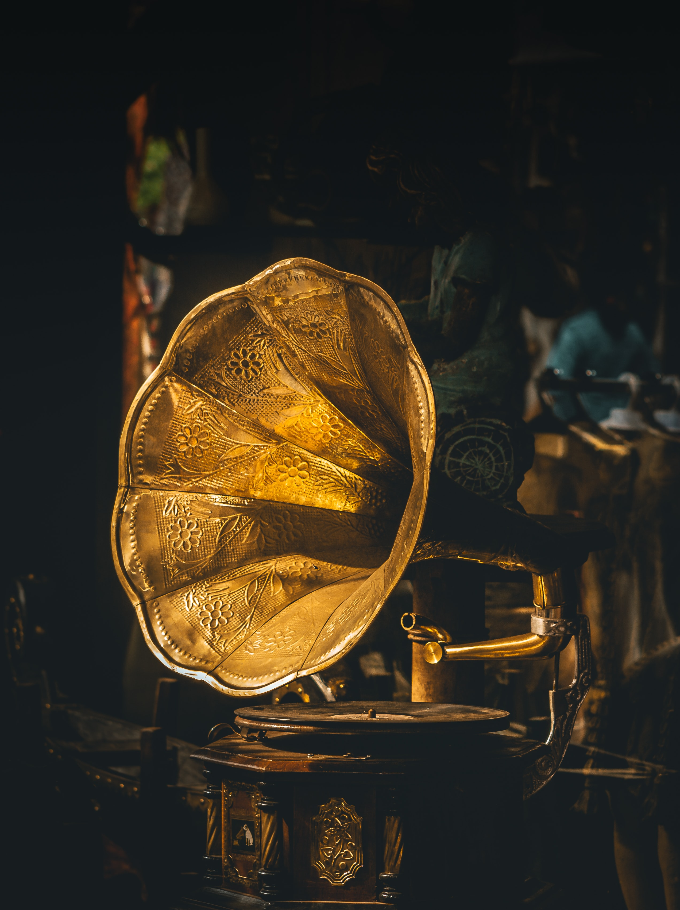

Музика — це мистецтво створення звуків, які відкривають нам безмежний світ людських переживань, настроїв та почуттів.
Вона проникає в усі сфери діяльності людини й полонить кожного з нас, незалежно від національності, способу життя та інтелекту.
Музика тісно пов'язана з іншими видами мистецтва. Віддавна вона «товаришує» з літературою, бо без поезії не було б пісень. Вірним
другом музики є також образотворче мистецтво: кожен штрих чи мазок на полотні — це застигла музика, а візерунок — майстерно втілений
ритм. Без музики неможливо уявити жодного спектаклю, кінофільму чи мультиплікаційної стрічки. Не менш важливу роль відіграє музика і в
цирковому мистецтві — без неї не було б неповторного відчуття свята, радості й очікування дива, яка дарує нам цирк.
Мовою музики можна передати будь-яку дію та найтонші порухи душі людини, мінливість природи, картини реального та фантастичного світу.
Музика взаємопов'язана з усіма видами та жанрами художньої творчості. Вона збагачує мистецькі образи, посилює їхнє емоційне сприйняття.
«Звучить, як музика», — ці слова вважають найвищою похвалою будь-якому твору мистецтва.
